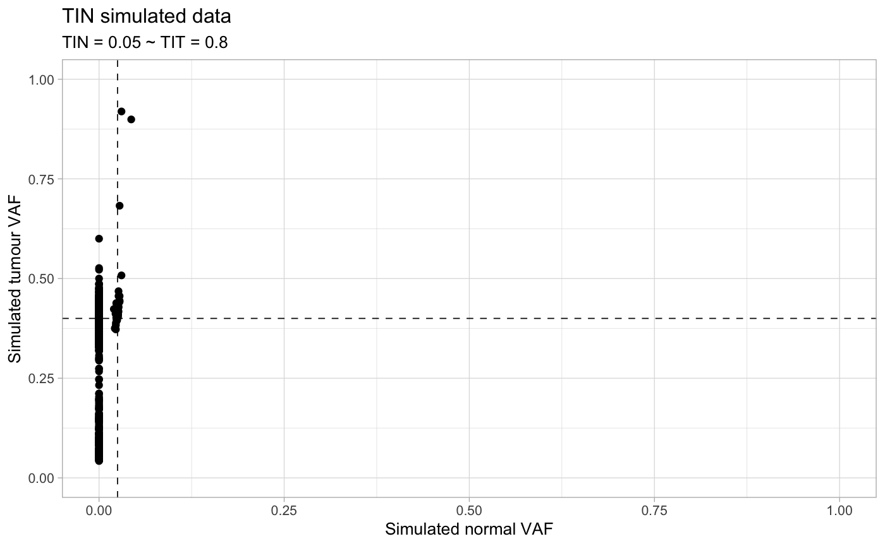
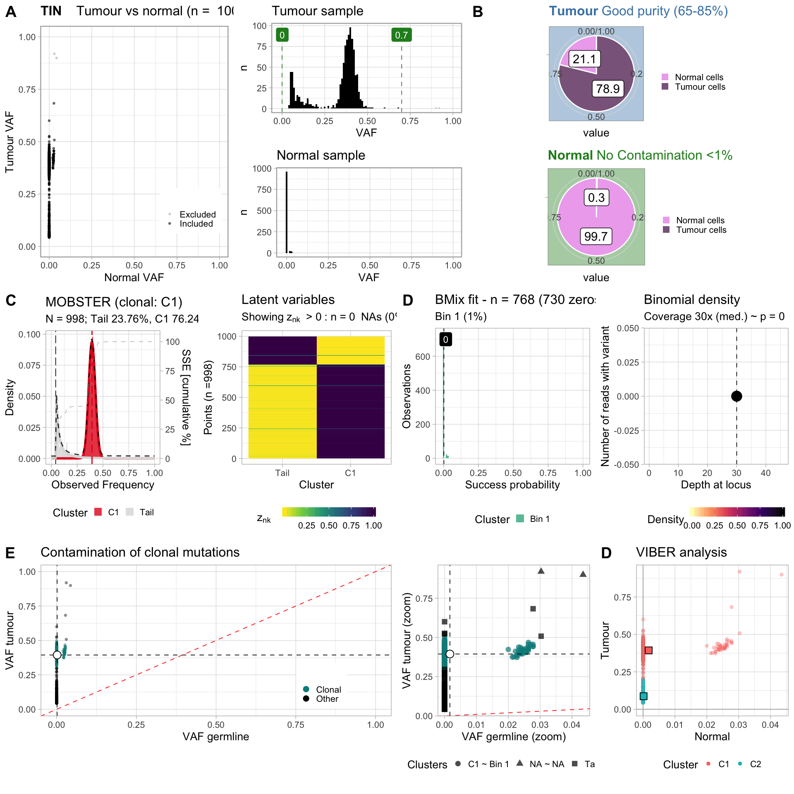

library(TINC)
#> [ BMix - Binomial and Beta-Binomial mixture models ]
#> Author : Giulio Caravagna <gcaravagn@gmail.com>
#> GitHub : caravagn/BMix
#> WWW : https://caravagn.github.io/BMix/
#>
#> > BMix is part of the "evoverse" [https://bit.ly/2orn94e] - a collection of packages to implement Cancer Evolution analyses from cancer sequencing data.
#> Warning: replacing previous import 'Biostrings::translate' by
#> 'seqinr::translate' when loading 'dndscv'
#> Warning: replacing previous import 'crayon::%+%' by 'ggplot2::%+%' when
#> loading 'mobster'
#> Warning: replacing previous import 'ggplot2::last_plot' by
#> 'plotly::last_plot' when loading 'mobster'
#> Warning: replacing previous import 'crayon::style' by 'plotly::style' when
#> loading 'mobster'
#> Warning: replacing previous import 'magrittr::extract' by 'tidyr::extract'
#> when loading 'mobster'
#> [ MOBSTER - Model-based clustering in cancer ]
#> Author : Giulio Caravagna <gcaravagn@gmail.com>
#> GitHub : caravagn/mobster
#> WWW : https://caravagn.github.io/mobster/
#>
#> > MOBSTER is part of the "evoverse" [https://bit.ly/2orn94e] - a collection of packages to implement Cancer Evolution analyses from cancer sequencing data.
#> [ VIBER - Variational inference for Binomial mixtures ]
#> Author : Giulio Caravagna <gcaravagn@gmail.com>
#> GitHub : caravagn/VIBER [https://caravagn.github.io/VIBER/]
#> WWW : https://caravagn.github.io/VIBER/
#>
#> > VIBER is part of the "evoverse" [https://bit.ly/2orn94e] - a collection of packages to implement Cancer Evolution analyses from cancer sequencing data.
#> Warning: replacing previous import 'VIBER::plot_mixing_proportions' by
#> 'mobster::plot_mixing_proportions' when loading 'TINC'
#> Warning: replacing previous import 'BMix::plot_model_selection' by
#> 'mobster::plot_model_selection' when loading 'TINC'
#> Warning: replacing previous import 'VIBER::plot_latent_variables' by
#> 'mobster::plot_latent_variables' when loading 'TINC'
#> Warning: replacing previous import 'VIBER::choose_clusters' by
#> 'mobster::choose_clusters' when loading 'TINC'
#> Warning: replacing previous import 'BMix::Clusters' by 'mobster::Clusters'
#> when loading 'TINC'
#> [ TINC - Tumour in Normal contamination ]
#> Author : Giulio Caravagna <gcaravagn@gmail.com>
#> GitHub : caravagn/TINC
#> WWW : https://caravagn.github.io/TINC/
#>
#> > TINC is part of the "evoverse" [https://bit.ly/2orn94e] - a collection of packages to implement Cancer Evolution analyses from cancer sequencing data.TINC is a simple package that provides only a few functions.
The input mutation data should report the following information
chr7:96202670:96202670:T:G 33 0 109 47
chr11:127887757:127887757:T:C 26 0 108 52
chr7:147652534:147652534:G:A 37 0 114 10
chr3:18609334:18609334:T:G 31 0 136 15
chr4:86759954:86759954:T:A 29 0 121 14
chr6:95597565:95597565:C:T 39 0 130 70Columns:
a mutation identifier, which can be anything provided it does not contain duplicates. In this example all mutations are SNVs, and the id contains the chromosome, positions, reference and alternative alleles of the SNV.
the number of total reads with the alternative allele, in the normal sample.
the number of total reads with the alternative allele, in the tumour sample.
Input (two options):
TINC, which should have no column names or headers.id, n_ref_count, n_alt_count, t_ref_count, t_alt_count and filters. . ### Data generatorTIN provides a function to generate a random dataset for the analysis, which you can use to play around with TIN.
sampled_data = random_TIN(TIT = .8, TIN = 0.05)
print(sampled_data)
#> $data
#> # A tibble: 1,000 x 6
#> id n_ref_count n_alt_count t_ref_count t_alt_count filters
#> <chr> <dbl> <dbl> <dbl> <dbl> <chr>
#> 1 chr_fake:1:2:A:C 32 0 75 58 PASS
#> 2 chr_fake:2:3:A:C 38 0 67 46 PASS
#> 3 chr_fake:3:4:A:C 28 0 65 43 PASS
#> 4 chr_fake:4:5:A:C 33 0 68 41 PASS
#> 5 chr_fake:5:6:A:C 25 0 73 42 PASS
#> 6 chr_fake:6:7:A:C 37 1 68 53 PASS
#> 7 chr_fake:7:8:A:C 19 0 77 46 PASS
#> 8 chr_fake:8:9:A:C 24 0 66 50 PASS
#> 9 chr_fake:9:10:A… 18 0 64 56 PASS
#> 10 chr_fake:10:11:… 27 0 71 46 PASS
#> # … with 990 more rows
#>
#> $plot
You can then proceed as follows - using FAST so the analysis is faster
TIN_fit = autofit(sampled_data$data, FAST = TRUE)
#> [ TINC ~ Load tumour/normal data ]
#>
#> Input dataframe 1000 x 6
#>
#> =-=-=-=-=-=-=-=-=-=-=-=-=-=-=-=-=-=-=-=-=-
#> Mutations annotated in the normal sample
#> =-=-=-=-=-=-=-=-=-=-=-=-=-=-=-=-=-=-=-=-=-
#> # A tibble: 1,000 x 11
#> chr from to ref alt id n_ref_count n_alt_count DP NV
#> <chr> <chr> <chr> <chr> <chr> <chr> <dbl> <dbl> <dbl> <dbl>
#> 1 chr_… 1 2 A C chr_… 32 0 32 0
#> 2 chr_… 2 3 A C chr_… 38 0 38 0
#> 3 chr_… 3 4 A C chr_… 28 0 28 0
#> 4 chr_… 4 5 A C chr_… 33 0 33 0
#> 5 chr_… 5 6 A C chr_… 25 0 25 0
#> 6 chr_… 6 7 A C chr_… 37 1 38 1
#> 7 chr_… 7 8 A C chr_… 19 0 19 0
#> 8 chr_… 8 9 A C chr_… 24 0 24 0
#> 9 chr_… 9 10 A C chr_… 18 0 18 0
#> 10 chr_… 10 11 A C chr_… 27 0 27 0
#> # … with 990 more rows, and 1 more variable: VAF <dbl>
#>
#> =-=-=-=-=-=-=-=-=-=-=-=-=-=-=-=-=-=-=-=-=-
#> Mutations annotated in the tumour sample
#> =-=-=-=-=-=-=-=-=-=-=-=-=-=-=-=-=-=-=-=-=-
#> # A tibble: 1,000 x 11
#> chr from to ref alt id t_ref_count t_alt_count DP NV
#> <chr> <chr> <chr> <chr> <chr> <chr> <dbl> <dbl> <dbl> <dbl>
#> 1 chr_… 1 2 A C chr_… 75 58 133 58
#> 2 chr_… 2 3 A C chr_… 67 46 113 46
#> 3 chr_… 3 4 A C chr_… 65 43 108 43
#> 4 chr_… 4 5 A C chr_… 68 41 109 41
#> 5 chr_… 5 6 A C chr_… 73 42 115 42
#> 6 chr_… 6 7 A C chr_… 68 53 121 53
#> 7 chr_… 7 8 A C chr_… 77 46 123 46
#> 8 chr_… 8 9 A C chr_… 66 50 116 50
#> 9 chr_… 9 10 A C chr_… 64 56 120 56
#> 10 chr_… 10 11 A C chr_… 71 46 117 46
#> # … with 990 more rows, and 1 more variable: VAF <dbl>
#>
#> VAF summaries
#>
#> # A tibble: 2 x 7
#> sample Min. `1st Qu.` Median Mean `3rd Qu.` Max.
#> <chr> <chr> <chr> <chr> <chr> <chr> <chr>
#> 1 Normal 0 0 0 0 0 0.04
#> 2 Tumour 0.04 0.34 0.38 0.33 0.41 0.92
#>
#> VAF range 0 ~ 0.7 [ c("FALSE 2", "TRUE 998") ] tumour mutations
#>
#> =-=-=-=-=-=-=-=-=-=-=-
#> MOBSTER fit n = 998
#> =-=-=-=-=-=-=-=-=-=-=-
#>
#>
#> [AUTOMATIC SETUP] FAST - overrides any parameter you have set.
#>
#> [ MOBSTER fit ~ N = 998 - random seed 12345 ]
#>
#> - Beta(s) K = 1,2 ~ Pareto tail : ON/OFF;
#> - Fit by Moments-matching (s = 100, i = random, ε = 1e-06) scoring with reICL
#> - Runs 2 x 2 x 2 = 8 without parallel
#> - Clusters filter : π > 0.02 and N > 10
#>
#>
#>
#> MOBSTER fit completed in 0.06 mins
#>
#> BEST FIT: reICL
#>
#> [ MOBSTER ] N = 998 points with K = 1 Beta clusters, fit by MM in 11 steps [CONVERGED]
#>
#> Components (fit)
#> Tail n = 230 (0.24) Shape = 1.3
#> Beta C1 n = 768 (0.76) Mean = 0.39
#>
#> Scores (model selection)
#> NLL BIC AIC entropy ICL reduced.entropy
#> -1420.923 -2800.411 -2829.846 47.04639 -2753.365 0
#> reICL size
#> -2800.411 6
#>
#> =-=-=-=-=-=-=-=-=-
#> BMix fit n = 768
#> =-=-=-=-=-=-=-=-=-
#> [ BMix ~ Fitting data ]
#> Total number of runs: 4
#>
#> Run # | Samp. # | Binom. | Beta-Binom. | Conv. | ICL
#> ------------------------------------------------------------------------------
#> 1/4 | 1 | 1 | 0 | OK | 1129.60788884076 *
#> 2/4 | 2 | 1 | 0 | OK | 843.865767642207 *
#> 3/4 | 1 | 2 | 0 | OK | 1059.388
#> 4/4 | 2 | 2 | 0 | OK | 1151.393
#>
#> *** Best with ICL: 843.8658
#>
#> BMix model with K = 1 components: 1 Binomials and 0 Beta-Binomials.
#>
#> Binomials
#> Bin 1
#> 0.001664987
#>
#> Beta-Binomials
#> NULL
#>
#> ICL: 843.8658
#>
#> Binomial peaks 0.00166498707444245
#> Mixing proportions 1
#> Clonal score 0.00166498707444245
#> TIN 0.0033299741488849
#>
#> =-=-=-=-=-=-=-=-=-=-
#> VIBER fit n = 1000
#> =-=-=-=-=-=-=-=-=-=-
#> [ VIBER - variational fit ]
#>
#> INPUT
#> Points N = 1000
#> Clusters K = 10 (max)
#>
#> Dirichlet alpha = 1e-06 (conc.)
#> Beta a0 = 1; b0 =1 (shape)
#>
#> Beta (posterior) prior
#> Optimize epsilon = 1e-10; steps =5000; r = 10
#>
#>
#>
#> BEST FIT
#>
#> [ VIBER - Variational inference for Binomial mixtures ]
#>
#> Points N = 1000
#> Dimensions W = 2
#> Fit CONVERGED (24 steps; eps. 1e-10) with Variational
#>
#> Binomial parameters (2 digits rounded)
#> # A tibble: 2 x 10
#> C5 C10 C6 C1 C2 C3 C4 C7 C8 C9
#> <dbl> <dbl> <dbl> <dbl> <dbl> <dbl> <dbl> <dbl> <dbl> <dbl>
#> 1 0 0 0.05 0.5 0.5 0.5 0.5 0.5 0.5 0.5
#> 2 0.39 0.09 0.91 0.5 0.5 0.5 0.5 0.5 0.5 0.5
#>
#> Proportions (ordered)
#> # A tibble: 10 x 2
#> entry value
#> <chr> <dbl>
#> 1 C5 0.785
#> 2 C10 0.213
#> 3 C6 0.00200
#> 4 C1 0.00000000100
#> 5 C2 0.00000000100
#> 6 C3 0.00000000100
#> 7 C4 0.00000000100
#> 8 C7 0.00000000100
#> 9 C8 0.00000000100
#> 10 C9 0.00000000100
#>
#>
#> COMPLETED: 0.07 mins, with status CONVERGED
#>
#> =-=-=-=-=-=-=-=-=-=-=-=-=-=-=-=-=-=-=-=-=-=-=-=-
#> Selecting Binomial clusters (F1,2-heuristic).
#> =-=-=-=-=-=-=-=-=-=-=-=-=-=-=-=-=-=-=-=-=-=-=-=-
#>
#> F1. Cluster size 0.02
#> F2. Num. of dimensions 0
#> F2. Min. Binomial peak 0
#> # A tibble: 10 x 7
#> cluster pi Above_cut F1 F2 accepted new.labels
#> <chr> <dbl> <dbl> <lgl> <lgl> <lgl> <chr>
#> 1 C5 0.785 2 TRUE TRUE TRUE C1
#> 2 C10 0.213 2 TRUE TRUE TRUE C2
#> 3 C1 0.00000000100 2 FALSE TRUE FALSE C3
#> 4 C2 0.00000000100 2 FALSE TRUE FALSE C4
#> 5 C3 0.00000000100 2 FALSE TRUE FALSE C5
#> 6 C4 0.00000000100 2 FALSE TRUE FALSE C6
#> 7 C6 0.00200 2 FALSE TRUE FALSE C7
#> 8 C7 0.00000000100 2 FALSE TRUE FALSE C8
#> 9 C8 0.00000000100 2 FALSE TRUE FALSE C9
#> 10 C9 0.00000000100 2 FALSE TRUE FALSE C10Summary of the results (with an S3 object)
print(TIN_fit)
#> [ TINC - Profiler for bulk samples TIN/TIT contamination ]
#>
#> Input : n = 998 used out of 1000 annotated (100%)
#> TIT : 79% ~ n = 768 clonal mutations, cluster C1
#> TIN : 0% ~ n = 38 with VAF > 0
#>
#> QC Tumour Good purity (65-85%)
#> QC Normal No Contamination <1%Plot the results (with an S3 object)
